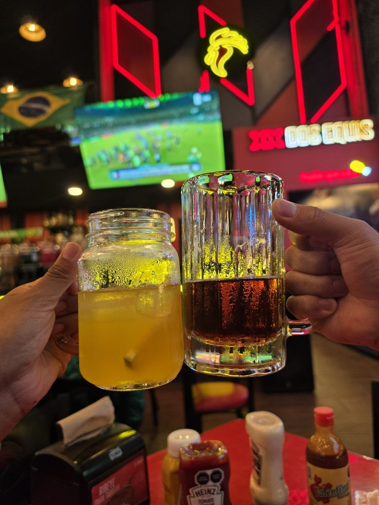
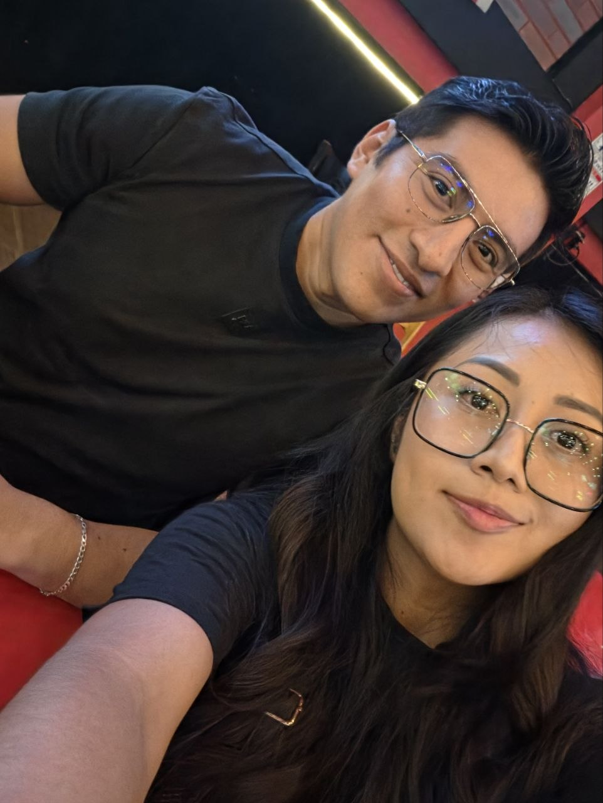
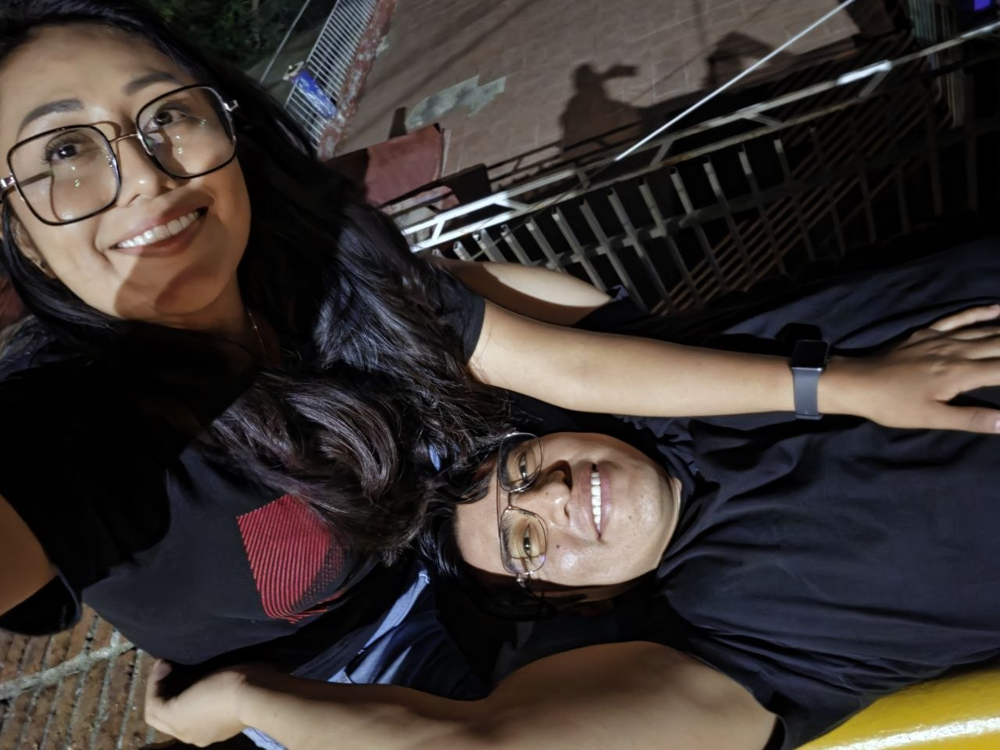
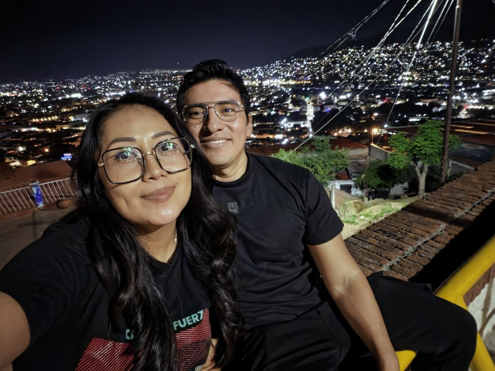

commit 0023
Date: 18 Jun 2026
🟡 Mi Primer Partido
🟢 Git Message
feat: first Mexico match archived
⚪ Story
Ese día fuimos a ver jugar a México.
Terminamos en El Gallo Cervecero para ver el partido.
Yo tomé solamente una cerveza.
Tú tomaste un poco más.
Yo iba a manejar y tampoco tenía muchas ganas de tomar más.
La verdad es que nunca había vivido un partido de México de esa manera.
Y, para mi sorpresa, salió mi lado futbolero.
Me gustó la experiencia.
Fue diferente ver el partido en un lugar así, rodeada de gente,
compartiendo la emoción del momento.
Cuando terminó el partido ya estaba oscureciendo.
En lugar de regresar directamente a casa, decidimos ir a ver las luces
del Cerro del Fortín.
Nos quedamos ahí un rato.
Nos sentamos.
Nos acostamos a platicar.
Nos tomamos algunas fotografías.
Y simplemente dejamos que la noche siguiera tranquila.
Después de un rato nos fuimos a tu casa porque ya teníamos sueño.
Llegamos y nos quedamos a dormir.
Nunca había vivido un partido de México de esa manera.
Y quizá por eso terminó siendo una noche especial.
No solo por el partido.
Sino por haber descubierto ese lado futbolero que no conocía tanto de mí...
y por haberlo vivido contigo.
Después vinieron las luces del Fortín, las fotografías, las pláticas y
el sueño.
Pero aquella noche siempre tendrá un pequeño lugar aparte.
Fue mi primer partido emocionante.
🟣 Developer Notes
First Mexico match experienced.
Unexpected football side unlocked.
Fortín lights archived.
New shared experience added.
🟢 Impact on Project
+ First Mexico match documented.
+ New personal interest discovered.
+ Another quiet night together archived.
+ Special memory preserved.
🟢 Commit Status
✔ Completed
✔ Reviewed
✔ Ready for Release
🖼 Recuerdos

Y así comenzó mi primer partido de México… entre goles, una cerveza y buena compañía. ⚽️🍺

Resultó que ver fútbol contigo tampoco estuvo nada mal. 😉

Entre el partido y la plática, también hubo tiempo para simplemente estar.

Y terminamos la noche justo donde las luces se ven más bonitas.